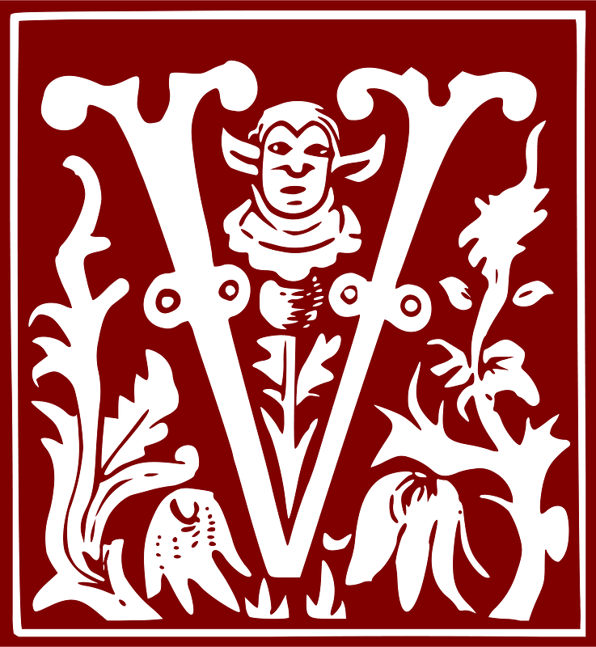

ÉNÉRONS DONC, prosternés, un si grand Sacrement, que l’an-tique précepte cède la place au nouveau rite ; que la foi supplée au manque des sens. Qu’au Père et au Fils soient louange et jubilation, salut, hon-neur, vertue et bénédiction : lou-ange égale à Celui qui procède des deux. Ainsi soit-il.